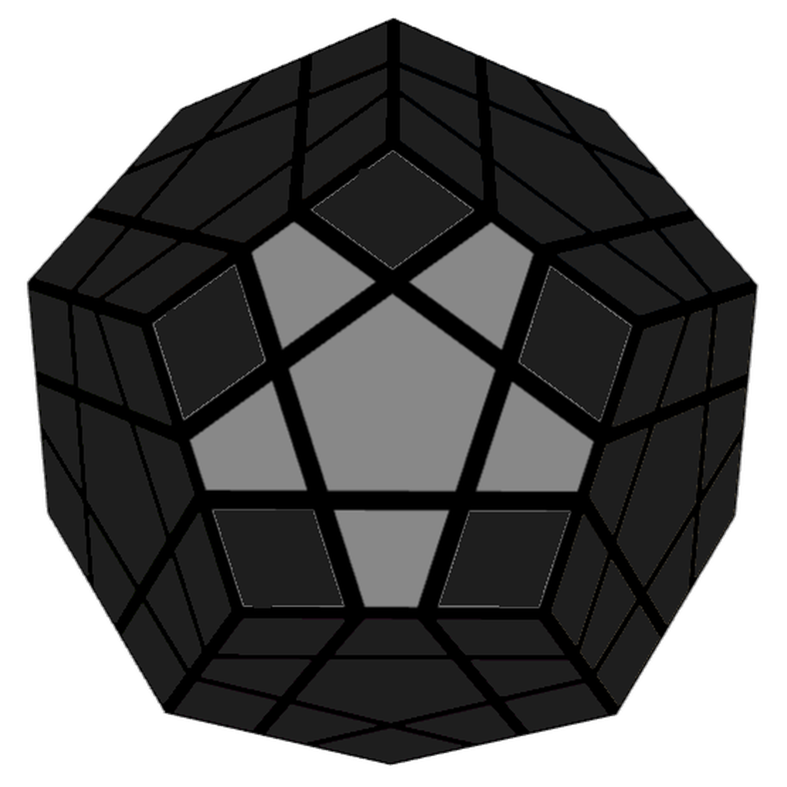
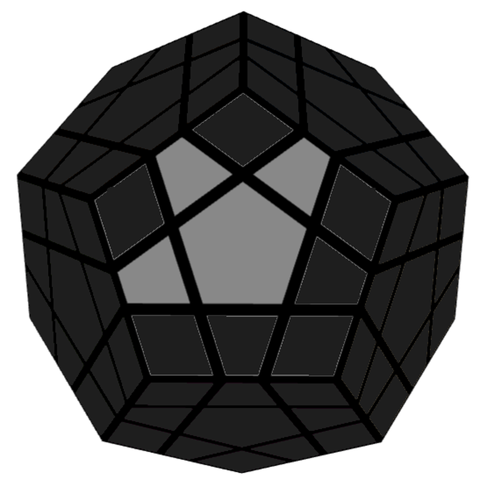
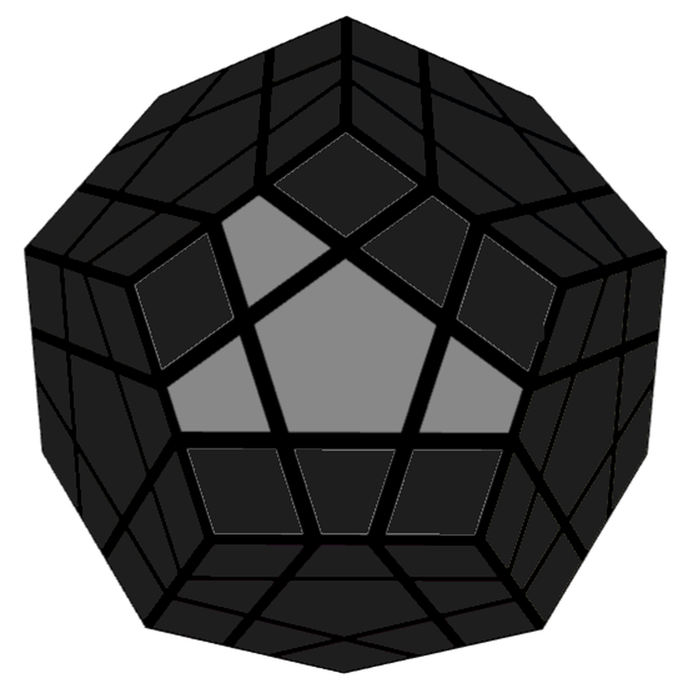
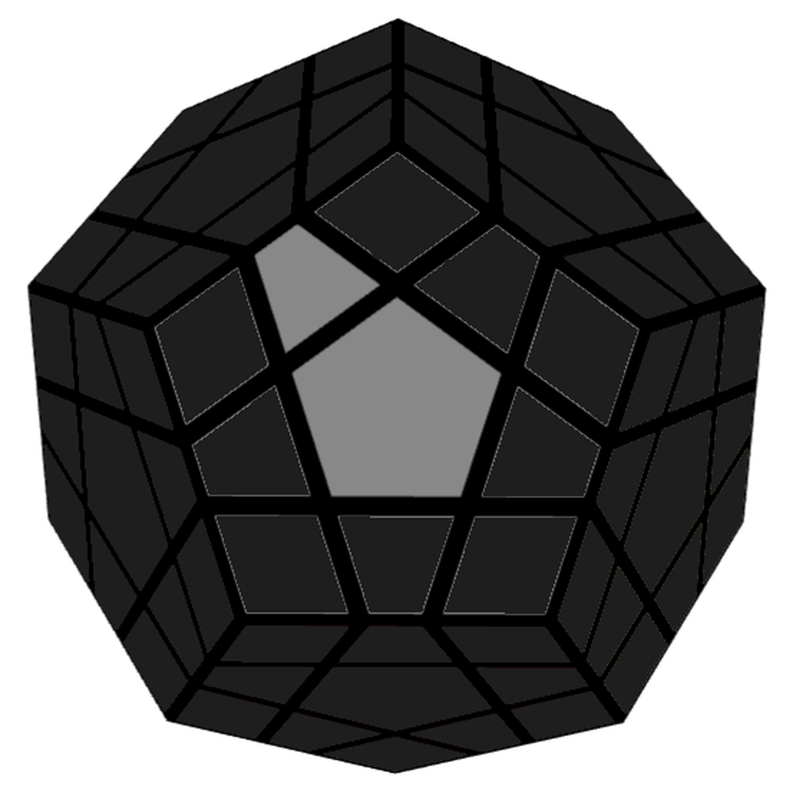
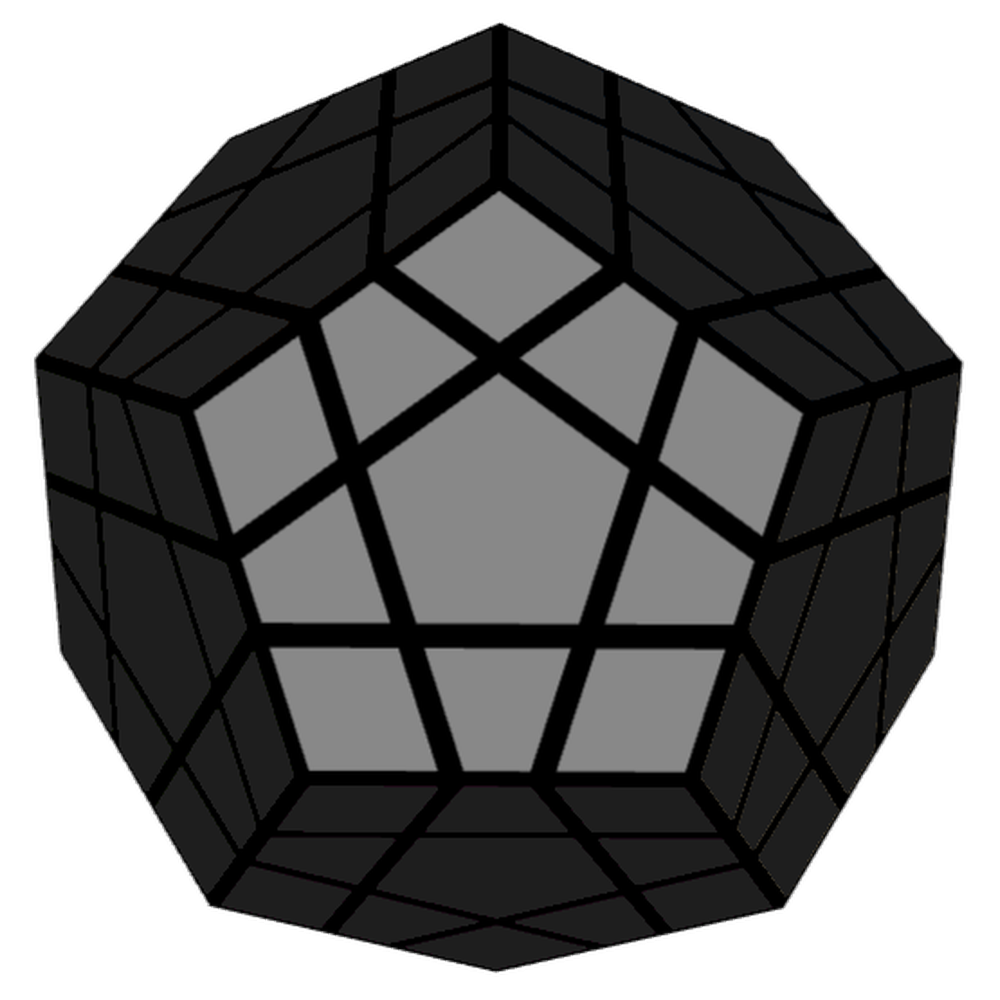

Step 1 — White Star
Solve the 5 white edge pieces around the white center piece (just like building the white cross on a 3x3). Make sure the side colors of the 5 edges line up with their matching adjacent centers (Blue, Red, Green, Purple, Yellow).
Step 2 — First 2 Layers
Complete the white face and its bottom ring by placing the 5 white corner pieces and their matching side edges. You can insert corners then edges using beginner moves, or pair them up using standard 3x3 F2L pairs.
Step 3 — Second 2 Layers
- Build Side Stars & S2L (Yellow, Blue, Red)
- Solve the Final S2L Slots (Green & Purple)
Work around the middle ring to build the Second Two Layers (S2L):
1-Solve the Yellow Star edges without breaking your White F2L, then insert the Yellow corner/edge slots.
2-Rotate right to the Blue center, solve its star edges, and complete its F2L slots.
3-Rotate right to the Red center, solve its star edges, and complete its F2L slots.
Space gets tight when solving the final two side colors:
1-Build the Green Star edge.
2-When inserting the remaining slots, temporarily move the green star edge into the open top face, pair up your corner/edge in the top layer, insert it, and restore your star edge back to its home center.
Step 4 — Grey Star
Flip all 5 grey edge pieces on the top face so grey points UP:

- Case 1
- Case 2
- Case 3

F U R U' R' F'

F R U R' U' F'

F R U R' U' F' (This leads to case 2)
Step 5 — Grey Edges
Rotate the top layer to see how many grey edges align with their side colors:
Hold on Front & Left: R U R' U R U2' R'
Rotate top face so only 1 edge aligns, face that edge, and run the algorithm once or twice until 2 adjacent edges match. Then hold them Front/Left and run it again.
Step 6 — Grey Face

Turn the cube upside down (Grey on bottom). Bring an unsolved corner to the bottom-right and repeat R U R' U' until grey faces down. Turn only the bottom face (D) to bring the next unsolved corner to the bottom-right and repeat (similar to step 7 in the 3x3)
Step 7 — Grey Corners
Keep Grey on the bottom. Alternate two 3-move triggers:
1-Extract an unsolved corner with Forward Trigger.
2-Turn bottom layer (D) to line up its matching target slot.
3-Insert it using Backward Trigger. Repeat until all 5 corners drop into place and the Megaminx is solved!